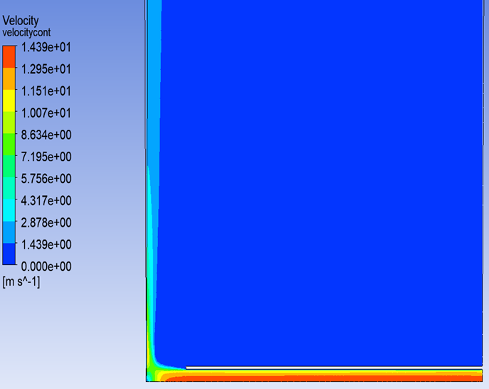
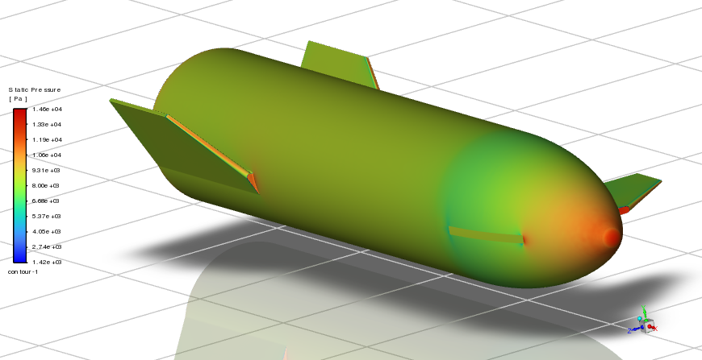
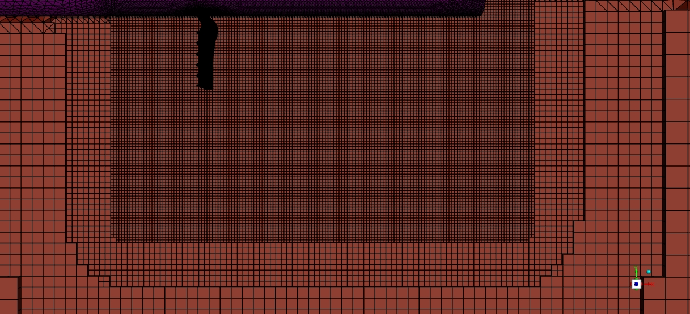
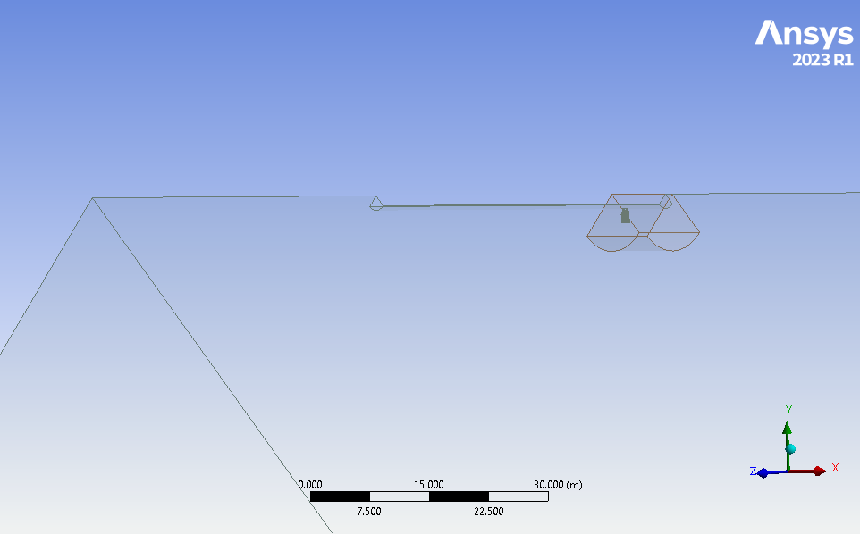
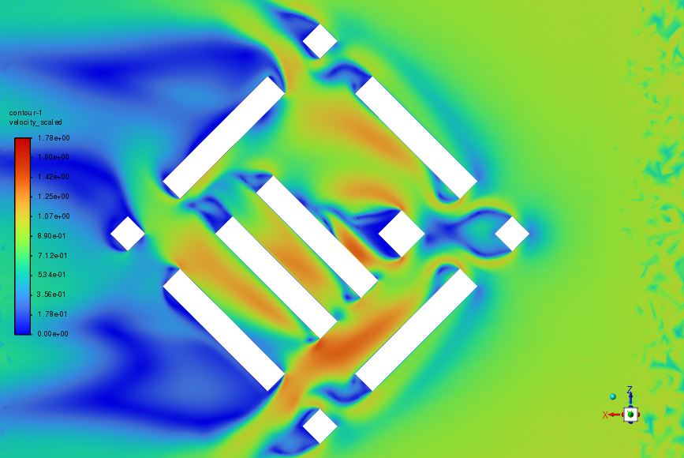

Kacper Frelek

I am an aerospace engineer specializing in Computational Fluid Dynamics (CFD), high-speed compressible aerodynamics, and reentry aerothermodynamic optimization.
My engineering work focuses on solving complex flow phenomena across subsonic, transonic, supersonic, and hypersonic flow regimes. From turbomachinery flutter analysis at GE Aerospace to launch vehicle aerodynamic design at Rocket Factory Augsburg and planetary atmospheric entry studies at Warsaw University of Technology.
✈️ Experience & Engineering Trajectory
At the Warsaw Institute of Aviation (EDC) collaborating with GE Aerospace, I conducted high-fidelity aeromechanical evaluations of commercial aircraft engine compressor and turbine blade rows. My work involved setting up dynamic structural models in ANSYS, constructing Campbell and Goodman diagrams, evaluating High Cycle Fatigue (HCF) life limits, and validating simulations against experimental strain-gauge and optical blade tip-timing measurements.
During my aerodynamics internship at Rocket Factory Augsburg (RFA), I contributed to external aerodynamic analysis for the RFA ONE multi-stage orbital launch vehicle. I simulated transonic drag surges, shock–boundary layer interactions over fairings and raceways, and modeled engine plume-on vs plume-off base flow recirculation to assess thermal protection requirements.
Within the Students' Space Association Rocketry Division, I spearheaded aerodynamic optimization for supersonic rocket airframes, including the split canards of the FOK Rocket and the nose cone and fin assembly of the GROT Rocket.
MSL Forebody Entry Aeroheating
Master's thesis research: High-enthalpy non-equilibrium aerothermodynamics of the Mars Science Laboratory 70° sphere-cone forebody, validated against Caltech T5 shock-tunnel data with Park 2T chemistry and surface catalysis models.
Turbulence Modeling: uRANS, DES & LES
Boundary layer transition, Kolmogorov microscale resolution, and unsteady separated wake dynamics at deep stall angles of attack.
Reusable Launch Vehicle Control
SpaceX Falcon 9 titanium grid fin aerodynamics across Mach 0.8–1.91 and Starship hypersonic aerodynamic database (ADB) generation.
Turbomachinery Vibration & HCF
Campbell resonance tracking, blade flutter avoidance, temperature-dependent modal parameters, and Goodman diagram fatigue envelopes.
uRANS vs DES vs LES Turbulence Showdown
🔬 The Physics Objective
When an airfoil operates deep in post-stall regime (30° AoA) at high Reynolds number (\(Re = 6.85 \times 10^6\)), which turbulence modeling approach provides physically truthful predictions of separated vortex shedding, pressure pulsations, and energy dissipation?
I performed a direct computational showdown across three paradigms in ANSYS Fluent:
- uRANS (Unsteady RANS): Time-averaged Navier-Stokes equations with SST \(k\text{-}\omega\) closure. Highly economical, captures bulk separation cycles, but filters out high-frequency spectral turbulent cascades.
- DES (Detached Eddy Simulation): Hybrid RANS-LES approach. Retains robust wall-boundary treatment with RANS and activates 3D Large Eddy Simulation in massive separation zones.
- LES (Large Eddy Simulation): Resolves the 3D filtered Navier-Stokes equations directly down to the spatial subgrid scale (WALE / Smagorinsky), capturing Kelvin-Helmholtz roll-ups and inertial subrange energy cascade.
| Turbulence Model | Near-Wall Mesh (y⁺) | Resolved Flow Dynamics | Physical Fidelity | When to Use in Industry |
|---|---|---|---|---|
| uRANS (k-ω SST) | y⁺ ≈ 1.0 | Time-averaged separation bubble, bulk shedding frequency | Filters out turbulent spectral dynamics | Early design loops, preliminary aero-loads |
| DES (Spalart-Allmaras) | y⁺ ≈ 1.0 | Large separated vortex structures, shear layer instability | Balanced accuracy and computational demand | Separated wakes, stage separation, buffet analysis |
| LES (WALE / Subgrid) | y⁺ < 5.0 | Full 3D turbulent eddies down to Taylor/Kolmogorov scale | Ground-truth physics resolution (High CPU/memory) | Aeroacoustics, stall flutter, critical research |
Synchronized Turbulence Comparison
Direct side-by-side time-resolved velocity and vorticity evolution for uRANS vs DES vs LES at 30° AoA.
DES vs LES Vorticity Magnitude
Revealing fine-scale turbulent eddies and shear-layer roll-ups in the immediate suction-side wake.
DES vs uRANS: Velocity & Pressure Fields
Pressure pulsation signatures and recirculation zone dynamics along the chord.


Impinging Jet Aerothermodynamics & CFD
🧪 Experimental Benchmarking & Modeling Strategy
Impinging gas jets represent one of the most demanding benchmarks in aerothermodynamics, combining stagnation pressure surges, intense wall-jet shearing, and localized peak convective heat transfer rates critical for turbine blade cooling and rocket engine thrust-chamber thermal management.
To simulate a truly two-dimensional impinging configuration within ANSYS CFX (which operates natively in 3D), I engineered a single-cell-wide pseudo-2D computational domain with symmetry/periodic boundary conditions. I authored a custom User-Defined Function (UDF) in C to prescribe fully developed turbulent pipe flow velocity profiles at the nozzle exit, ensuring deterministic inflow boundary conditions.
📊 Key Findings & Heat Transfer Insights
- Turbulence Model Divergence: Benchmarked SST \(k\text{-}\omega\) against \(k\text{-}\epsilon\) formulations, discovering that standard eddy viscosity models overpredict turbulence kinetic energy at the stagnation point without Kato-Launder corrections.
- Nusselt Number Distribution: Mapped local wall heat transfer coefficients and Nusselt number distributions against published experimental laser-Doppler velocimetry (LDV) benchmarks, achieving tight correlation within the wall-jet acceleration zone.
- Mesh Refinement at Stagnation Point: Demonstrated that local Body of Influence (BOI) cell density is paramount to preventing artificial numerical diffusion in the jet shear layer.





Aeromechanics & Turbomachinery Blade Dynamics
✈️ Commercial Turbofan Compressor & Turbine Blade Aeromechanics
During my tenure at the Engineering Design Center (EDC) / Warsaw Institute of Aviation partnering with GE Aerospace, I evaluated rotating turbomachinery components across commercial jet engine compressors and turbines. My core responsibility was preventing aeromechanical flutter and mitigating high cycle fatigue (HCF) caused by unsteady aerodynamic forcing.
📈 Campbell Diagram Analysis
Constructed multi-order Campbell diagrams across engine operating speed sweeps (idle to redline RPM). Identified dangerous resonance crossings where bladed-disk natural frequencies coincided with aerodynamic excitation harmonics (engine order lines, stator-vane wake passing frequencies, and inlet total pressure distortion wakes). Guided mass distribution and chordwise stiffness tuning to clear resonance bands without compromising aerodynamic pressure ratios.
🔬 Modal Analysis & High Cycle Fatigue (HCF)
Conducted 3D finite element modal analyses across flexural, torsional, and stripe modes utilizing temperature-dependent alloy properties. Constructed modified Goodman diagrams to evaluate alternating vibratory stress amplitudes against steady centrifugal and aerothermal mean stresses. Correlated analytical predictions against full-scale engine test data from dynamic strain-gauges and blade tip-timing (BTT) optical probes.


RFA ONE Launch Vehicle Aerodynamics
🚀 Aerodynamic Engineering Internship at Rocket Factory Augsburg
At Rocket Factory Augsburg (RFA) in Augsburg, Germany, I participated in external aerodynamic characterization for the RFA ONE orbital launch vehicle. My scope spanned the complete atmospheric flight envelope, mitigating transonic drag rise and modeling complex plume-induced aerothermal base interactions.
🌌 Full-Flight Mach Regime Analysis
- Subsonic Ascent (M < 0.8): Evaluated surface pressure coefficients \(C_p\) during liftoff roll and max-Q atmospheric climb.
- Transonic Regime (0.8 < M < 1.2): Investigated critical Shock-Wave Boundary-Layer Interactions (SWBLI) over payload fairing transitions, stage separation flanges, and raceways to suppress separation bubbles and buffet vibrations.
- Supersonic Regime (1.2 < M < 5.0): Characterized conical bow shock anchoring, expansion fans, and aftward Center-of-Pressure (\(x_{\text{cp}}\)) migration to define stability margins for the GNC control laws.
🔥 Plume-On vs Plume-Off Engine Exhaust Base Recirculation
Modeled engine-on vs engine-off flowfields in ANSYS Fluent to quantify rocket exhaust plume expansion. Identified recirculating toroidal vortices in the base cavity that cause localized convective and radiative thermal loads on engine gimbal actuators.
🐍 Automated Python Post-Processing Infrastructure
Engineered Python automation scripts to parse ANSYS Fluent CFD outputs directly, automatically extracting aerodynamic force and moment coefficients (\(C_A, C_N, C_m\)), center-of-pressure coordinates, and shock attachment angles.

Starship Atmospheric Reentry Aerodynamics
🚀 Computational Aerodynamics of Starship Reentry
Conducted an extensive computational investigation on the aerodynamic behavior of the SpaceX Starship vehicle during atmospheric entry. The research analyzed how the blunt forward body, actuated forward canards, and aft body flaps interact to control vehicle pitch, lift, drag, and descent attitude throughout high-angle-of-attack belly-flop maneuvers.
📊 15.5-Million-Cell Mesh Discretization
Engineered a 15.5-million-cell computational domain in ANSYS Fluent utilizing tailored polyhedral-prism volume grids. Placed targeted Bodies of Influence (BOI) around canard hinge gaps and flap deflection zones to capture shock detachment, leeward recirculation, and crossflow boundary-layer separation while enforcing \(y^+ \approx 1.0\).
⚙️ Superposition Principle for Control Surfaces
- Deflection Matrix: Simulated canards and aft flaps under independent and counterposition deflections across pitch, yaw, and roll attitudes.
- Superposition Verification: Proved that the aerodynamic forces and moments of the forward canards and aft body flaps can be linearly superimposed with minimal cross-coupling error, saving over 60% in computational expenditure.
- Aerodynamic Database (ADB): Provided an aerodynamic look-up database and automated Python interpolation scripts for 6-DOF trajectory simulation and entry corridor targeting.




Falcon 9 Reusable Grid Fin Aerodynamics
🚀 Reusable Booster Atmospheric Guidance
My Bachelor's thesis, titled "Aerodynamic Performance Analysis of Falcon 9 Grid Fins: A Computational Investigation", examined the fluid dynamics governing SpaceX's titanium grid fins during first-stage booster atmospheric descent.
Lattice grid fins offer superior control authority with minimal hinge torque compared to planar fins, yet present severe shock-choking challenges in the transonic corridor.
🔬 CFD Modeling & Shockwave Physics
- Domain Formulations: Built 2D planar lattices and full 3D body-mounted booster stages with symmetry planes to capture wing-body aerodynamic interference.
- Transonic Choking Phenomena: Captured the formation of detached normal shock waves in front of individual lattice cells as the internal flow chokes near Mach 1.0, generating a steep wave drag surge.
- Wave Drag Delay via Back-Swept Geometry: Demonstrated how SpaceX's back-swept titanium grid fin design maintains attached oblique shocks, delaying normal shock detachment beyond Mach 1.5.





Validation of Laminar Aeroheating Models for the Mars Science Laboratory Forebody Against T5 Shock-Tunnel Data
🪐 Project Summary
This Master's Thesis validated laminar aerothermodynamic models for the Mars Science Laboratory (MSL) forebody using ANSYS Fluent, calibrated against Caltech T5 shock‑tube heat‑flux data. I learned the full set of theoretical formulations and governing equations (compressible Navier‑Stokes, multi‑species mass, vibrational energy, and chemical source terms) and explored how mesh resolution, 1‑T vs 2‑T energy formulations, and surface catalysis affect peak heating, informing TPS design for Martian entry.
During atmospheric entry into Mars at hypervelocities ranging from \(6.0\text{ to }8.5\text{ km/s}\), a spacecraft's kinetic energy is converted into extreme internal and thermal energy across a detached hypersonic bow shock. In the Martian atmosphere (\(\sim 97.1\%\text{ CO}_2, 2.9\%\text{ N}_2\)), temperatures behind the shock wave exceed \(6,000\text{–}10,000\text{ K}\), triggering strong thermal non-equilibrium (vibrational excitation relaxation) and chemical non-equilibrium (molecular dissociation of \(CO_2\) into \(CO, C, O,\) and \(O_2\)).
This Master's Thesis presents a comprehensive numerical validation of laminar aerothermodynamic modeling for the Mars Science Laboratory (MSL) 70° sphere-cone forebody aeroshell. Simulations were carried out using ANSYS Fluent and rigorously validated against experimental surface heat flux measurements from the Caltech T5 Hypervelocity Shock Tunnel (Shot 2254), originally conducted and published by Wright et al. (NASA Ames / Caltech).
The investigation explores the coupled sensitivities of spatial discretization accuracy (First-Order vs Second-Order Upwind schemes), thermal state (One-Temperature 1T vs Park Two-Temperature 2T formulation), and surface catalycity boundary conditions (Non-Catalytic, Mitcheltree finite-rate catalytic recombination, Supercatalytic, and Adiabatic wall conditions), mapping out the complete aerothermal heating envelope for Martian entry TPS sizing.
🧪 Caltech T5 Hypervelocity Shock Tunnel (Shot 2254)
Reflected-shock free-piston tunnel conditions reproducing true Martian atmospheric hypervelocity entry stagnation enthalpy:


📐 Theoretical Formulations & Governing Aerothermodynamic Equations
The hypersonic flowfield is governed by the compressible Navier-Stokes equations extended with multi-species mass conservation, vibrational energy conservation, and chemical source terms:
⚗️ 5-Species Carbon Dioxide Reaction Mechanism
The chemical kinetic mechanism comprises 5 neutral species (\(CO_2, CO, C, O, O_2\)) undergoing 5 forward and reverse elementary reactions:
🛡️ Surface Catalysis Boundary Formulations
- Non-Catalytic Wall (NC): Chemically inert surface with zero species mass flux (\(J_{s,w} = 0\)). Dissociated atoms cannot recombine at the wall, yielding the theoretical lower bound for aerodynamic heating (\(q_{\text{stag}} \approx 620\text{--}662\text{ W/cm}^2\)).
- Mitcheltree Diffusion-Limited Catalytic Model: Heterogeneous Eley-Rideal / Langmuir-Hinshelwood recombination model formulated for Martian heat shields: \[ O + s \to O_s, \quad CO + s \to CO_s, \quad CO_s + O_s \to CO_2 + 2s \] Recombines carbon monoxide and atomic oxygen into carbon dioxide at a rate constrained by diffusion through the boundary layer (\(q_{\text{stag}} \approx 712\text{--}739\text{ W/cm}^2\)).
- Supercatalytic Wall (SC): Idealized fully catalytic wall forcing mass fractions to their freestream / fully recombined equilibrium state (\(Y_{CO_2} = 1.0\)), releasing all chemical dissociation enthalpy directly into the vehicle surface (\(q_{\text{stag}} \approx 1125\text{--}1140\text{ W/cm}^2\)).
- Adiabatic Wall: Zero heat transfer condition (\(q_w = 0\)) to compute the stagnation recovery temperature \(T_{aw} \approx 6,612\text{ K}\).


🔬 Direct Benchmark Against Experimental Thermocouple Measurements
Figure below presents the centerpiece finding of the thesis: validation of the Second-Order Park Two-Temperature (2T-SS) Fluent computations against the experimental coaxial thermocouple data obtained in the Caltech T5 Hypervelocity Shock Tunnel (Shot 2254) by Wright et al., alongside NASA DPLR (Data-Parallel Line Relaxation) and LAURA code solutions:
🔑 Key Scientific Conclusions from the Thesis
- Superiority of Mitcheltree Catalysis: The Mitcheltree diffusion-limited recombination model under the 2T-SS scheme (\(q_{\text{stag}} = 738.7\text{ W/cm}^2\)) demonstrates remarkable agreement with the experimental T5 thermocouple measurements across the entire spherical nose cap (\(r/R_b \le 0.5\)) and along the conical flank.
- Catalycity Bounding Limits: The Supercatalytic assumption overpredicts stagnation heating by over 54.3% (\(1,140.1\text{ W/cm}^2\)), while the Non-Catalytic assumption underpredicts by 10.3% (\(662.3\text{ W/cm}^2\)). This conclusively demonstrates that assuming full catalycity imposes an overly severe mass penalty on Thermal Protection Systems, while non-catalytic assumptions would lead to catastrophic vehicle burn-through.
- Impact of Vibrational Non-Equilibrium (2T vs 1T): Incorporating Park's 2T vibrational energy equation increases the predicted stagnation heat flux by approximately 3.7% and sharpens the bow shock standoff distance, as vibrational freezing delays energy partition into translation.
- Spatial Discretization Order: First-order upwind schemes introduce artificial numerical diffusion that thickens the shock layer and rounds off the peak heating at the stagnation point and shoulder corner. Second-order spatial accuracy is mandatory for flight-accurate TPS sizing.
Urban Wind Aerodynamics & Pedestrian Comfort
🏙️ Environmental Fluid Dynamics & Microclimate Modeling
Evaluated aerodynamic airflow patterns induced by introducing a high-rise tower into a dense existing urban district. The project evaluated pedestrian-level wind acceleration, corner vortex shedding, and wake stagnation to optimize pedestrian safety and comfort.
🛠️ Experimental Correlation & UDF Development
- Scale Model: Built a 1:1500 geometric CAD model representing an urban district with maximum building heights of 90 m matching wind-tunnel test facilities.
- Logarithmic Atmospheric Boundary Layer: Developed custom C-based User-Defined Functions to enforce altitude-dependent velocity and turbulence intensity profiles matching Eurocode terrain categories III and IV.
- Multi-Directional Validation: Tested flow at 0°, 45°, and 90° wind azimuth angles, achieving velocity prediction correlation within ±10% of experimental wind tunnel probe readings.




Aerodynamics & Aerothermodynamics Interactive Lab
📐 Project 1: Boundary Layer & Near-Wall Mesh Quality (y⁺)
Calculate required first-cell prism inflation layer height (\(\Delta y\)) for target \(y^+ \approx 1\), viscous sublayer resolution, boundary layer thickness (\(\delta_{99}\)), and skin friction coefficient (\(C_f\)) across Earth and Martian atmospheric regimes.
| Alt z [km] | Temp T [K] | Press P [Pa] | Dens ρ [kg/m³] | Dyn Visc μ [μPa·s] | Kin Visc ν [m²/s] |
|---|
For turbulent flow (\(Re_L \ge 5 \times 10^5\)), \(C_f\) is calculated using the Schlichting & Gersten (2016) [3] / Frank M. White (\(7^{\text{th}}\) ed., Sec. 7.4) [4] correlation:
C_f = 0.0592 · Re_L^(-0.2), derived from the Prandtl 1/7th power turbulent velocity profile on a smooth boundary wall.
🔥 Project 2: Fay-Riddell Hypersonic Aeroheating Solver
Laminar stagnation-point heat transfer using the complete Fay-Riddell formulation from Master's Thesis (p. 20–23) [1][8], with Normal Shock jump relations [6], Newtonian velocity gradient [6], Sutherland viscosities [7], and boundary layer wall catalysis [1].
📖 Mathematical & Physical Equations Used for Calculations
Complete analytical formulations, gas dynamics jump relations, and aerothermodynamic laws implemented across the calculations above.
Project 1: Viscous Boundary Layer, Skin Friction & Near-Wall Mesh Resolution (y⁺)
6 Formulations
▼
Extracts ambient temperature \(T(z)\) and static pressure \(P(z)\) across altitude layers \(z\) (US Standard Atmosphere 1976 [5] or Martian CO₂ model), computes fluid density via the ideal gas law, and applies Sutherland's law [7] to yield dynamic viscosity \(\mu\) and kinematic viscosity \(\nu\).
Governs the ratio of dynamic inertial forces to viscous forces across characteristic length \(L\) [3][4]. Dictates whether the boundary layer is laminar or turbulent (\(Re_{\text{crit}} \approx 5 \times 10^5\)).
Computes the dimensionless skin friction coefficient from the Blasius exact laminar boundary-layer solution [2] or the Schlichting-Gersten / Frank White turbulent correlation [3][4].
Determines the physical normal distance from the solid wall where tangential flow velocity recovers to \(99\%\) of freestream (\(u = 0.99 U_\infty\)), guiding overall prism layer refinement extent.
Quantifies the tangential viscous shear force per unit area at the wall and defines the characteristic friction velocity scale \(u_\tau\) fundamental to the law of the wall [4].
Calculates the exact first prism inflation cell height \(\Delta y\) required to resolve the laminar viscous sublayer (\(y^+ \approx 1\)) for low-Reynolds CFD turbulence models (\(k\text{-}\omega\) SST, Spalart-Allmaras) [4].
Project 2: Hypersonic Gas Dynamics, Shock Layer & High-Temperature Transport
7 Formulations
▼
Computes freestream acoustic speed \(a_\infty\) from ambient atmospheric temperature \(T_\infty\) and gas ratio of specific heats \(\gamma\), establishing flight velocity \(V_\infty\) for incoming Mach number \(M_\infty\) [6].
Governs conservation of mass, normal momentum, and total energy across the detached bow shock along the stagnation streamline, delivering post-shock boundary layer edge state (\(p_e, T_e, \rho_e\)) [6].
In accordance with boundary-layer momentum (\(\partial p / \partial y = 0\)), wall pressure equals post-shock edge pressure \(p_e\). Evaluates wall fluid density \(\rho_w\) at isothermal cold-wall temperature (\(T_w = 300\text{ K}\)) [8].
Computes temperature-dependent dynamic viscosity at the hot boundary-layer edge (\(\mu_e\)) and cold isothermal wall (\(\mu_w\)) for Air (\(S = 110.4\text{ K}\)) and \(\text{CO}_2\) (\(S = 222.0\text{ K}\)) [7][8].
Calculates the streamline acceleration away from the stagnation point (\(x = 0\)) for a spherical nose of radius \(R_n\) via Newtonian flow impact theory (Master's Thesis Eq. 9, p. 21) [6][8].
Quantifies the total stagnation enthalpy \(h_{0e}\) entering the shock layer and the wall enthalpy \(h_w\), defining the thermodynamic enthalpy driving potential \(\Delta h = h_{0e} - h_w\) that powers conductive/diffusive heat transfer [6][8].
Computes total pressure recovery across the normal shock wave, quantifying aerodynamic stagnation pressure retention and entropy generation at hypersonic flight speeds [6].
Project 2: Hypersonic Stagnation-Point Aeroheating & Catalysis (Master's Thesis Eq. 5)
2 Master's Thesis Formulations
▼
Quantifies the enhancement or reduction of wall heat transfer caused by atomic recombination of dissociated species (\(\text{CO}_2 \rightarrow \text{CO} + \text{O}\) or \(\text{O}_2 \rightarrow 2\text{O}\)) diffusing across the boundary layer as governed by the Lewis number \(Le\) and wall catalytic surface efficiency [1][8].
The classical boundary-layer formulation of Fay & Riddell (1958) [1] benchmarked in Kacper Frelek's Master's Thesis against Caltech T5 shock-tunnel Shot 2254 experimental data (pp. 20–23) [8]. Integrates edge transport properties, isothermal cold wall (\(T_w = 300\text{ K}\)), Newtonian velocity gradient, driving enthalpy potential, and species catalysis to deliver the stagnation surface heat flux \(q_w\).
📚 Scientific References & Literature Citations
Primary peer-reviewed publications, foundational aerothermodynamic treatises, atmospheric standards, and Master's thesis benchmarks governing the Aero Lab equations above.
Global Expeditions & Cultural Perspectives
⛩️ Japan — Tokyo, Kyoto, Nara & Fukuoka
Bouncing through Tokyo's vibrant avenues in Shibuya and Shinjuku, walking through Kyoto's vermilion Fushimi Inari torii gates at sunrise, greeting the free-roaming deer of Nara, and savoring tonkotsu ramen at Fukuoka's open-air yatai stalls. Japan demonstrated the value of meticulous attention to detail—the exact same philosophy required for precision CFD meshing and aerothermodynamic engineering.
🏙️ South Korea — Seoul, Gangnam & Historic Palaces
Exploring Seoul's bustling Myeongdong markets, admiring modern architectural lines in Gangnam and Dongdaemun, and touring Joseon Dynasty history at Gyeongbokgung Palace. South Korea's rapid technological pace strongly resonates with my enthusiasm for high-speed aerospace development.
🏛️ Greece — Aegean Coasts & Classical Heritage
From the sun-drenched waters of Crete to ancient classical ruins, Greece provided the ultimate summer recharge between intensive numerical simulation campaigns. Navigating winding coastal roads, tasting authentic Mediterranean flavors, and absorbing centuries of classical history.


Future Research Horizons
🌌 DSMC (Direct Simulation Monte Carlo)
Simulating transitional and free-molecular hypersonic regimes where the continuum hypothesis breaks down (\(Kn > 0.05\)). Tracking stochastic collision dynamics of billions of gas molecules during upper-atmosphere orbital entry.
🔄 Hybrid CFD-DSMC Multiscale Solvers
Coupling Navier-Stokes continuum solvers in dense shock layers with DSMC particles in rarefied outer flow domains, maximizing computational speed without sacrificing molecular-scale physics.
⚛️ Kinetic Boltzmann Solvers
Discrete velocity method (DVM) solvers integrating the non-linear Boltzmann transport equation to eliminate statistical Monte Carlo noise in micro-fluidic and low-speed rarefied regimes.
🧠 Physics-Informed Neural Networks (PINNs)
Embedding Navier-Stokes and boundary-layer conservation laws directly into deep neural network loss functions for real-time aerodynamic coefficient inference during spacecraft entry guidance.